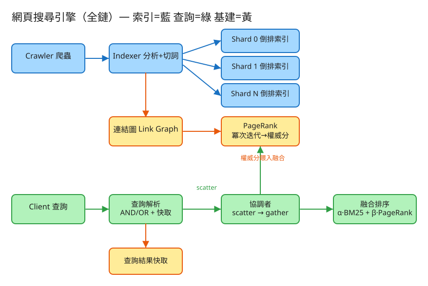

L 圖/演算法 看故事就懂 輕鬆讀 30 分鐘
你在 Google 打「分散式系統」，按下 Enter，不到半秒，它從幾百億個網頁裡，挑出最相關、最可信的幾筆排給你看。
這件事的難，難在兩點：① 網頁多到一台電腦放不下（500 億頁的索引是好幾個 PB，比你硬碟大幾百萬倍）； ② 同樣有提到「分散式系統」的頁有上百萬個，到底誰該排第一？
很多人以為搜尋引擎是「拿到你的字，再一頁一頁翻過所有網頁找」。那樣慢到天荒地老。真正的魔法你其實早就見過——
搜尋引擎事先做的，就是這張超大的索引：把每個「字」對應到「哪些網頁有出現它」。這張表叫做 倒排索引。
「倒排」是因為它把關係反過來了：一般我們想「這一頁有哪些字」（順著看）；索引則是「這個字出現在哪些頁」（倒著看）。 查詢時直接從字查到頁，完全不用翻全部網頁。
💭 停一下：如果不先做索引，每次有人搜尋都要「掃過全部 500 億頁」，會發生什麼事？
別被「搜尋引擎」嚇到。整件事其實就是闖 4 關，一關一關來：
網頁分散在全世界的網站上，搜尋引擎得先派出爬蟲（一支自動程式），順著超連結一頁一頁逛、把內容抓回自己家存起來。
👉 這關（爬蟲）其實是第 ㊲ 題的主題。本題假設「文章都已經剪回來了」，我們專心做後面 3 關。
把每篇抓回來的文章切成一個個字，記下「哪個字出現在哪些網頁、出現幾次」，存成上面講的倒排索引。
但索引大到一台電腦放不下，所以要切成很多份放在很多台機器上——這就帶到第 3 關。
因為索引被拆開放在好幾百、上千台機器（每台叫一個分片 shard），你要找的那個字可能每台機器都存了一部分。怎麼辦？
這個「同時撒出去問所有分片 → 收齊合併」的動作，工程上叫 scatter-gather（scatter＝撒出去、gather＝收回來）。 每個分片各自挑出自己手上最相關的幾筆回報，協調者再把全部合在一起。
合併後可能有上百萬筆都「提到了你的字」。最後一關是排順序，靠兩個分數一起算：
最後 總分 = 相關性 + 權威，分數高的排前面。這就是為什麼搜尋結果第一名通常又相關、又是大家信得過的網站。
第 4 關提到的 PageRank，是 Google 起家的招牌絕活，但概念超好懂——它就是給每個網頁打一個「人氣 / 權威分數」。
網頁也一樣。在網路上，「A 頁放了一個連結指向 B 頁」就等於「A 幫 B 投了一票 / 轉發了 B」。PageRank 的核心精神：
所以一個沒沒無聞的小部落格，就算自稱權威也沒用；維基百科被全世界幾百萬頁連入，自然分數很高。 關鍵是：PageRank 只看「連結關係」，跟你查什麼字無關——它是這頁與生俱來的「江湖地位」。
因為要掃過整張「誰連誰」的大網（幾兆條連結），這個計算很重、很慢，所以是離線事先算好存起來的， 不會在你按 Enter 那半秒裡現算。查詢時只是查一下這頁的人氣分是多少，很快。
💭 停一下：為什麼搜尋結果不能「只看人氣（PageRank）」就好？
工程上的「取捨」聽起來很抽象。換個方式記：這個系統最怕三件事，每個設計都是為了避開某個「怕」。

✏️ 用 Excalidraw 開啟編輯（diagram.excalidraw）白話導讀，分「建索引（平時準備）」跟「查詢（你按 Enter）」兩條路：
看完上面，這些詞你其實都已經懂了，這裡只是把「工程術語 ↔ 白話」對起來，Part 2 會用到：
| 工程術語 | 白話解釋 |
|---|---|
| 倒排索引 | 書末的「索引頁」：每個字對應到「它出現在哪些網頁」 |
| 爬蟲 (Crawler) | 自動逛網頁、把內容抓回家的「剪報員」（第 ㊲ 題主題） |
| 分片 (Shard) | 索引太大放不下，切成很多份，每份放一台機器（一個「分館」） |
| scatter-gather | 同時問遍所有分館（scatter）→ 收齊答案合併（gather） |
| BM25 | 「相關性」分數：這頁跟你查的字多相關（出現幾次、字夠不夠罕見） |
| PageRank | 「人氣 / 權威」分數：被越多有份量的頁連入，自己越可信（像被大咖轉發） |
| 連結圖 | 「誰連到誰」的大網，算 PageRank 用的 |
| 冪次迭代 | PageRank 反覆算很多輪，直到分數穩定下來 |
| 融合排序 | 把「相關性」和「人氣」兩個分數加起來，決定最終順序 |
| 快取 (Cache) | 把熱門查詢的答案先存著，下次同樣問題直接給，不重算 |
| QPS | 每秒幾筆查詢（衡量「多忙」的單位） |
| API | 系統之間講好的「點餐單」格式：你給我什麼、我回你什麼 |
| 水平擴展 | 不夠就「多找幾台機器一起做」（這題就是多加分片） |
我們估幾個關鍵數字（數字不必背，重點是感受它的「形狀」）：
| 估什麼 | 大概數字 | 所以呢？ |
|---|---|---|
| 要索引多少網頁 | ~500 億頁 | 索引大到數百 TB ~ PB 級，一台機器絕對放不下 |
| 要切成幾片 | 單片控在 ~50GB → 需要數千片 | 每片放一台機器，再加副本備援 |
| 每秒多少查詢 | 峰值 ~10 萬 QPS | 因為每次查詢都要問遍所有分片，每片承受的壓力＝外部總查詢量 |
| 查詢要多快 | p99 < 200 毫秒 | 問所有分片 ~100ms + 合併 ~30ms + 排序取摘要 ~50ms，要塞進預算內 |
| PageRank 多大 | 500 億節點、數兆條連結 | 太重 → 離線批次算，絕不放在你按 Enter 的那條路上 |
💭 停一下：為什麼「熱門查詢的快取」這麼划算？
這題只要記住幾張「點餐單」：
① 查詢（最高頻，就是你按 Enter）
GET /api/v1/search?q=分散式系統&op=or&alpha=0.7&beta=0.3
給我：要查的字、AND還OR、相關性vs人氣的比重(α/β)
我回：排好序的結果 + 各片各撈幾筆 + 是不是來自快取那個 alpha / beta 是「相關 vs 人氣」的旋鈕：beta 調大 → 更偏好權威大站；alpha 調大 → 更純比相關。可以依查詢類型調。
② 新增 / 更新一篇文件（建索引用）
POST /api/v1/documents
給我：{ 網址, 標題, 內文, links:[連到哪些網址] }特別注意 links 那欄——它記下「這頁連到誰」，就是拿來拼出連結圖、算 PageRank 的原料。
③ 重算 PageRank（離線批次，不在查詢路上）
POST /api/v1/pagerank { damping: 0.85 }
④ 看系統狀態（分片分布、快取命中率…）
GET /api/v1/statePageRank 是「平時偷偷重算」的，所以它有自己的觸發口，跟你按 Enter 的查詢完全分開兩條路。
每頁一列：編號、網址、標題、內文、連到哪些頁(out_links)。
那欄「連到哪些頁」之後會拿來拼連結圖。
文件依編號分到不同片：第 s 片只存「自己那批頁」的：某個字 → 哪些頁、各出現幾次。
另外存每頁的字數（算相關性時要做「長文不該佔便宜」的修正）。
連結圖：哪頁指向哪些頁；人氣分：每頁的 PageRank 分數（離線冪次迭代算好的結果）。
查詢排序時，從這本直接查一頁的人氣分，很快。
(正規化後的查詢字 + α + β) → 上次算好的結果。同樣的問題再來，直接給，跳過整個 scatter-gather。
| 哪裡會塞車 | 怎麼拓寬 |
|---|---|
| 單一分片太大 → 查詢變慢 | 把每片控在剛好的大小（如 ~50GB），語料變大就多切幾片 + 加副本分攤讀取 |
| 問遍上千片，要等最慢的那片才能合併 | 每片只回「自己最好的幾筆」減少傳輸；對慢的片再補問一台副本，誰先回用誰 |
| 罕見查詢快取命中不了，每次都要全問一遍 | 靠「切片平行」把工作攤平；熱門詞的索引可提前備好 |
| 同一個爆紅查詢被打爆 | 結果快取（命中就跳過整條路）+ 在離使用者近的地方也放一份 |
| 「全域罕見度」分片後難維護 | 分散維護，或用近似值（容許一點點誤差，換可擴展） |
| PageRank 兆級連結算不動 | 離線分散式批次算，週期性重算，絕不進查詢路徑 |
「Part 1 的三個怕」是核心取捨。這裡補幾個常被面試官追問的：
讀十遍不如玩一遍。這題有一個真的可以跑的小程式，讓你親眼看到「分片 + 問遍合併 + 人氣排序」：
# 啟動（在這題的 demo 資料夾裡）
cd demo
php -S localhost:8038 -t public
# 然後瀏覽器打開 http://localhost:8038cached: true（命中快取）。玩過 demo 了，來掀開引擎蓋看看「那幾關到底是哪幾段程式做的」。 好消息：核心只有兩個小檔，剛好對應前面講的工作。不用會 PHP，我把程式翻成白話、只留關鍵那幾行，看註解就懂。
索引大到一台放不下，所以每篇文件進來時，先用編號算出「該歸到哪個分館」，只在那個分館記它的「字 → 出現幾次」。
function 分到哪片(文件編號) {
return crc32(文件編號) % 分片數 // ← 用雜湊均勻打散到 4 個分館
}
function 加文件(標題, 內文, 連到哪些頁) {
編號 = 拿一個新編號
片號 = 分到哪片(編號)
詞們 = 切詞(標題 + 內文) // 小寫、去標點、去 the/is 這種虛字
各分館[片號].每頁字數[編號] = 詞們的數量
foreach (詞 → 次數 in 統計(詞們))
各分館[片號].索引[詞][編號] = 次數 // ← 倒排：字 → 哪頁出現幾次
清掉查詢快取 // 內容變了，舊答案作廢
}關鍵就是 crc32(編號) % 分片數 這招：同一個編號永遠算到同一個分館，文件就被均勻打散到各分館，每館只扛自己那批。
這正是「索引切成很多本、各放一個分館」那一關。
查詢進來，總櫃台撒給每個分館各自算相關性（BM25），再把大家的答案收齊合在一起。
function 查詢(字, ...) {
// ── scatter：問遍每一個分館 ──
foreach (片號 in 所有分館) {
這片答案 = 在這片的索引上算 BM25(字) // ← 各館只翻自己的書
每片撈幾筆[片號] = 這片答案的筆數 // 看各館各貢獻多少（demo 會顯示）
foreach (頁 → 分數 in 這片答案)
全部收集[頁] = 分數 // ── gather：直接收進大袋子 ──
}
// 接著進入「融合排序」（下一段）
}就是前面說的「同時打電話問 1000 個分館 → 收齊彙整」。
demo 為了好懂用一個 for 迴圈「依序」問每個分館；真實系統是平行把查詢送到分散在不同機器的分館——邏輯一模一樣，只是 demo 在一台機器上模擬。
💭 停一下：BM25 裡有一項「這個字夠不夠罕見」，為什麼不能讓各分館用自己手上的資料各算各的？
這是離線先算好的人氣分。一句話講原理：一頁的分數 = 連到它的那些頁，各分一點點給它；反覆算很多輪，直到分數不再大變動就停。
每頁先給一樣的分數 = 1 / 總頁數 // 大家先平分
重複很多輪 {
foreach (頁 p) {
新分數[p] = 基礎分
foreach (連到 p 的頁 q)
新分數[p] += q的分數 / q連出去的頁數 // ← q 把自己的分平均分給它連到的每頁
}
變動量 = 所有頁「新分數 − 舊分數」的總和
舊分數 = 新分數
if (變動量 < 很小的門檻) break // ← 穩定了 → 收斂，停！
}「q 把自己的分數平均分給它連到的每頁」就是「A 連到 B＝A 轉發 B、把份量分一點給 B」。
一輪一輪互相更新，被越多「有份量的頁」連入的頁分數就越爬越高，最後穩定下來不再大動——這個反覆逼近的過程就叫冪次迭代。
那個 基礎分 是給「隨機跳到任一頁」留的小機率（阻尼），避免有些頁分數歸零。
收齊各分館的答案後，最後一步把相關性和人氣兩個分數加權相加，排好順序；而且整個查詢結果會存進快取，同樣的問題下次直接回。
function 查詢(字, α, β) {
鑰匙 = hash(排序後的字 + op + α + β)
if (快取有這把鑰匙) return 快取[鑰匙] // ← 查詢快取：命中就跳過整個 scatter-gather
全部收集 = scatter-gather(...) // 前面第 2 段
最高相關 = 全部收集裡最大的 BM25
最高人氣 = 所有頁裡最大的 PageRank
foreach (頁 in 全部收集) {
相關分 = 頁的BM25 / 最高相關 // 各自正規化到 0~1，才能公平相加
人氣分 = 頁的人氣 / 最高人氣
最終分[頁] = α × 相關分 + β × 人氣分 // ← 融合！α 偏相關、β 偏人氣
}
依最終分由高到低排序
快取[鑰匙] = 結果 // ← 存起來，下次同問題秒回
return 結果
}α × 相關 + β × 人氣 就是那個「相關 vs 人氣的旋鈕」：β 調大→權威大站往前；α 調大→更純比相關。
兩個分數要先各自除以最大值正規化到 0~1，否則一個是個位數、一個是 0.0001，加起來人氣會被淹沒。
最後把 (字+α+β) 當鑰匙存結果——這就是前面「熱門答案先存著、同問題直接給」那一關，省掉最貴的整段運算。
| 關卡（前面講的） | 哪個檔 | 關鍵那段 |
|---|---|---|
| ② 建索引 + 切片 | ShardedIndex | 分到哪片()（crc32 % 分片數） |
| ③ 問遍分館再合併 | ShardedIndex | 查詢() 裡的 scatter / gather 迴圈 |
| 人氣分（PageRank） | PageRank | 「反覆算到收斂」的 for 迴圈 |
| ④ 融合排序 + 快取 | ShardedIndex | α×相關 + β×人氣 + 鑰匙存快取 |
👉 重點：真實系統會把「JSON 檔 + 迴圈問各片」換成「分散在上千台機器的分片 + 平行 scatter-gather + 分散式批次算 PageRank」（業界就是 Google／Elasticsearch 那一套）， 但上面這幾段判斷邏輯一字都不用改——分片、scatter-gather、PageRank 冪次迭代、α/β 融合排序，全都是同一套。所以讀懂這個小 demo，你就讀懂了這題的核心。
先不要看答案，自己用講給朋友聽的方式回答看看（講得出來才是真的懂）：
網頁搜尋 = 超大型圖書館的查詢櫃台。（是第 ㉖ 題站內搜尋的「整個網際網路」放大版）
4 個關卡：① 爬回網頁 → ② 建「書末索引」（字 → 哪些頁）→ ③ 查詢時問遍所有分片再合併（scatter-gather）→ ④ 用「相關(BM25) + 人氣(PageRank)」融合排序。
PageRank 一句話：網頁的人氣分，被越多有份量的頁連入越可信（像被大咖轉發），跟查的字無關、離線先算好。
3 個怕：怕慢（熱門查詢用快取跳過）、怕排錯順序（相關與人氣要平衡）、怕大到放不下/算不動（索引切片、PageRank 離線算）。
想看更精簡、面試速查用的版本？👉 前往完整版（同樣內容的工程速查格式）。